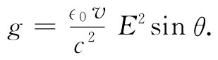
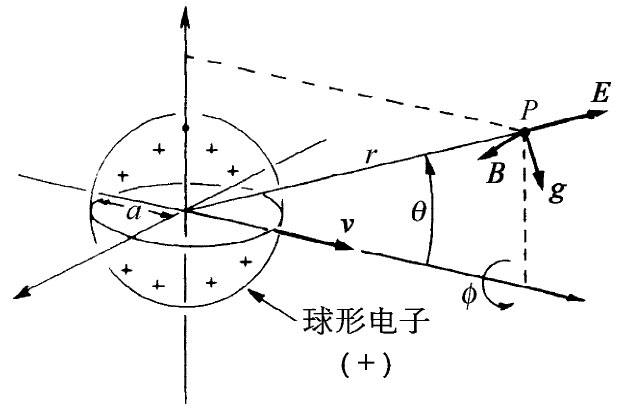
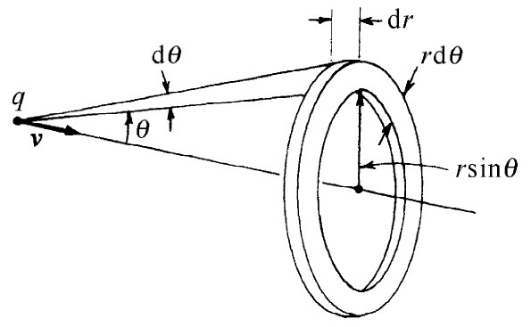
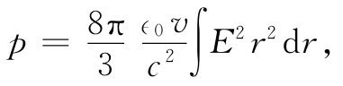
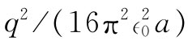
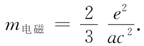

设想一个电子以匀速通过空间，暂时假定这速度比光速要慢。与这个运动电子相联系的是有一动量——即使电子在带电之前没有质量——由电磁场中的动量引起。我们能够证明，这个场动量是在电荷速度v的方向上，而且对于小的速度来说它与v成正比。在与电荷中心的距离为r、与运动路线成角度θ的P点处（参见图28-1）电场是径向的，而且正如我们业已知道的那样，磁场为v×E/c2 。根据式（27.21）和（27.15），动量密度为
g=∈0 E×B.
它斜对着运动路线，如图中所示，并具有大小

|  |  |
| 图28-1 一个正电子的场E，B及其动量密度g。对于负电子，E和B都倒转方向，但g的方向仍不变 | 图28-2 用来计算场动量的体积元2πr2 sinθdθdr |
这些场对于运动路线是对称的，因而当我们对整个空间积分时，那些横向分量加起来就会等于零，结果给出一个平行于v的合动量。在这个方向上g的分量为gsinθ，我们必须对它在全部空间进行积分。取一个其平面垂直于v的圆环作为体积元，如图28-2所示。它的体积为2πr2 sinθdrdθ，于是总动量为
由于E与θ无关（对于v≪c），所以我们可立即对θ积分，这个积分为
由于θ积分的上下限分别为0和π，因而这个θ积分只给出一个因子4/3，结果

这个积分（对于v≪c）就是刚才在求能量时算出过的，它为 ，因而
场中的动量——电磁动量——与v成正比。这正是我们应有的粒子动量，粒子的质量就等于v前面的系数。因此，我们可把这一系数叫作电磁质量 m电磁 ，并把它写成
 （28.4）